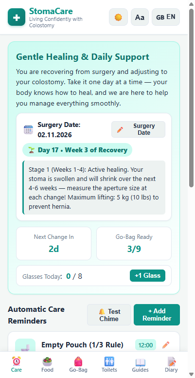
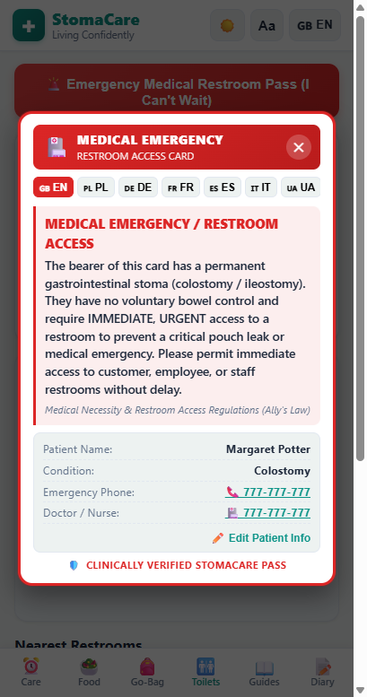
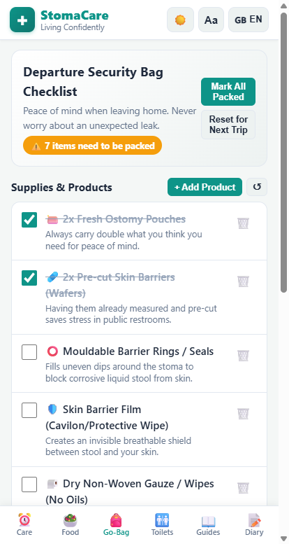
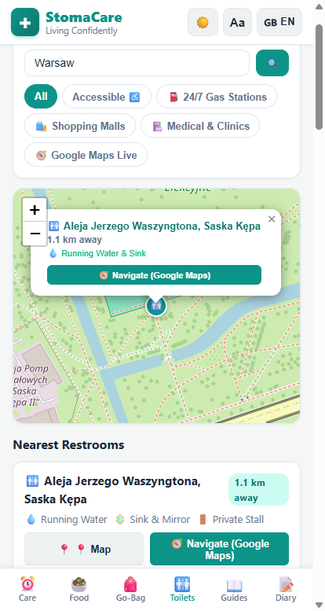

Eliminate pouch leaks, diet guesswork, and travel restroom anxiety. StomaCare gives colostomy, ileostomy, and urostomy patients the clinical precision tools needed to thrive every single day.




Generic health and medication apps don't understand wafter sizing, output viscosity, or peristomal skin burns. StomaCare was created specifically for ostomates by ostomy care specialists.
Never face embarrassing denials at customer-only restrooms. Displays a legally formulated medical card adhering to Ally's Law with verified physician seals and 1-tap translation into 10 world languages.
Concentric live circles display your exact stoma base alongside an amber +1.5mm to 2mm wafer cut clearance ring. Track post-surgical shrinkage across weeks 1 to 8 to prevent painful acid burns.
Search hundreds of foods or consult the intelligent clinical assistant. Get instant dietary clarity: chew requirements, transit time impacts, odor neutralizers, and critical bowel obstruction warnings.
Instant GPS radar pinpoints accessible public, municipal, and commercial restrooms nearby with live distance calculations, opening hours, wheelchair accessibility, and 1-tap navigation.
Leave home with absolute peace of mind. Dynamic emergency pack checklist with visual Readiness Score, supply counts, and automatic alerts when your supplies run low.
Built-in 60-second hydrocolloid warm-up timer activates wafer adhesive bonds for maximum seal strength. Fullness reminders alert you when the pouch reaches 1/3 capacity to prevent seal rupture.
A sudden pouch ballooning or impending seal leak requires immediate restroom access — not debate with retail employees or cashiers. StomaCare provides an official digital medical pass designed to be handed directly to staff without awkward explanations.
In the first 6–8 weeks post-surgery, your stoma reduces significantly as surgical edema subsides. An oversized cut exposes raw peristomal skin to caustic digestive enzymes; an undersized cut strangles mucosal blood flow.
Bowel blockages from indigestible food particles (mushrooms, corn, raw nuts, fruit skins) are the leading cause of emergency hospital readmissions for new ostomates. Our smart nutrition guide keeps you fully protected.
Compare how StomaCare's specialized clinical architecture outperforms ordinary medication and habit apps.
| Feature Capability | Generic Health Apps | StomaCare Companion |
|---|---|---|
| Emergency Restroom Medical Pass | ✕ None | ✓ Ally's Law + 10-Language Instant Pass |
| Wafer Cut Concentric Ruler | ✕ None | ✓ Dual Concentric Guide (+1.5mm Clearance) |
| Stoma Shrinkage & Healing Log | ✕ Basic notes only | ✓ Post-Op Stage 1–8 Weeks History Log |
| Ostomy Blockage Hazard Food AI | ✕ Generic calories | ✓ Clinical Bowel Obstruction & Transit Guide |
| Emergency Restroom GPS Radar | ✕ None | ✓ OpenStreetMap GPS Accessible Toilet Finder |
| Adhesive Hydrocolloid 60s Warm-Up | ✕ None | ✓ Built-in Seal Warm-up & 1/3 Fullness Timers |
| Data Privacy & Security | ✕ Ads & Data Brokers | ✓ 100% Local On-Device Storage (Zero Ads) |
Download StomaCare directly to your Android device or join our upcoming Google Play Store release. 100% free, 100% private.